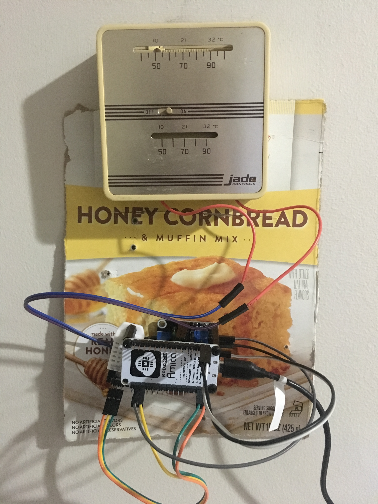

Professional Experience
Wrote low level drivers for hardware components such as Gyroscope, Accelerometer, Magnetometer, and Barometer Implemented code responsible for reliable GPS receiver positioning in government applications.
Embedded Linux development. I worked on ruggedized handheld radios running embedded linux. I was tasked with working with hardware drivers linux system networking to support different network topology demonstrations.
Ran demos to showcase different capabilities of the GPS receivers for high level government officials.
Developed a GPS tracking Web Application. This effort supported "field testing"; Taking receivers out on the road to test new algorithms and collect data. Previously we needed to post process the collected data to see how close to the truth our new algorithm was. As a side project I developed a web application that plotted the receiver's calculated coordinates on a downloaded map (downloaded maps removed the need for internet access in a car).
Graduate Teaching Assistant
University of Rhode Island
May 2016 - May 2018
Developed and proctored lab series for senior level Computer Engineering class Taught students: computer organization levels including designing hardware (in VHDL) for FPGA and interfacing it with system via a device driver; developing software in C for embedded system in Linux environment using cross compilation; and Python coding exercises.
Computer Engineering Intern
IAV, Gifhorn Germany
Feb - Aug 2015
Developed analysis tools to visualize automotive sensor data The tools were used to analyze emissions performance of Audi 6 and 8 cylinder diesel engines These tools were developed using MATLAB.
Electrical Engineering Intern
Sensata Technologies, Attleboro MA
Jun-Aug 2014
Developed debugging tools for an automotive pressure sensor The Arduino interface communicated with the sensor via I2C and with the host computer via USB. The GUI portion of the tool was made with MATLAB.
Noteable Courses and Projects
Smart Thermostat
Personal Project
Fall 2018
Utilized a raspberry pi and temperature sensor to make my own smart thermostat It installs on top of the current thermostat So the original thermostat is still 100% functional (good for apartment living where I don't want to make any permanent changes) It also connects to Apples homekit so Siri can control it. Update: I have set up more of a hub and node architecture in the hopes of reducing the power and running on battery someday Now the temp sensor is attached to NodeMCU while the raspberry pi can be remote to the houses thermostat.
One handed typing application
Personal Project
Fall 2018
This project requires a bit of background. In short typing with one hand on a keyboard can be achieved by utilizing the muscle memory of the other hand see here for more details Most implementations require some modifier key to tell the program that the typist wants to type a key from the other side. I envisioned and implemented a version that guesses possible words based on all the possible combinations of letters cross referenced with a dictionary. I believe this version is much more natural. Right now it only works in Windows because the predictive text program I leveraged from only works on Windows.
Automated Temperature Sampler
Senior Capstone Project for Eagle Electric Engineering Enterprise (4E)
Fall 2015 - Spring 2016
Team designed and built robot to crawl on inner face of submarine hull and probe hull for temperature Programmed controller (Arduino Uno) to take sensor inputs and control motor outputs Included programming of a 12 bit counter chip In charge of making HMI (Human Machine Interface), an android tablet app Created protocol overlay on top of SPI for main controller to communicate with the HMI through Wifi shield For a better description check out the slides and the report Check out a demo video below.
Classification of Written Digits
ELE665 Detection and Modulation
Spring 2017
Used Detection Theory techniques (spefically GLRT) to classify written digits Click here to look through a short presentation and here for a paper describing the results Check out my code here.
Value Prediction
ELE548 Computer Architecture
Spring 2018
Implemented a method for predicting processor load values (Vtage) in a simulated processor Able to predict correctly 8.49% of the time while limiting incorrect predictions to 0.35% The code and simulated framework were written in C++. Click here for a paper describing the results Check my code out here.
Wifi Based Motion Detection
ELE543 Computer Networks
Spring 2018
Designed and implemented a method for detecting motion between a wifi access point and a wireless device (Raspberry Pi 3) without any hardware modifications The method used detection theory techniques (a simplified version of energy detection). Click here for a brief presentation of the implementation and click here for the report.
Karaoke Machine
ELE501 Linear Transform Analysis
Fall 2017
Designed a filter to remove vocals from a single channel song Written in matlab used signal processing techniques Click here to view the code.
Keytar Project
Personal Project
Fall 2017
Circuit-Bending project to modify an old casio keyboard into a faux keytar Modifications include: 1/4 in guitar amp jack, feedback loop for "crunchier" sound, and the addition of a variable clock source hooked up to a strip potentiometer to make a slide pitch bender Video to come soon.
Guitar Pick Holder
Personal Project
Spring 2018
Skills
Assembly (mostly arm)
C/C++
- most of my work is done bare bones C
Java
Bash scripting
- I find it incredibly rewarding to successfully automate a task using a script. And I work with linux systems enough for it to be very time-saving.
Matlab
Python
- to a lesser extent I have used python for task automation
HTML/javascript
- I know enough HTML/javascript to maintain this webpage and implement my GPS tracking application
- I don't do much in java anymore but I learned to code in Java so it holds a special place in my heart
- In grad school I ran many simulations and I would usually design them in Matlab first to make sure they worked before porting them to C or C++
Education
Graduate (GPA: 3.63/4) - May 2018
University of Rhode Island - Kingston, RI
M.S. Electrical Engineering
Certificate in Embedded Systems
View my most recent Transcripts
Undergraduate (GPA: 3.79/4) - May 2016
University of Rhode Island - Kingston, RI
B.S. Computer Engineering
B.S. Applied Mathematics
B.A. German